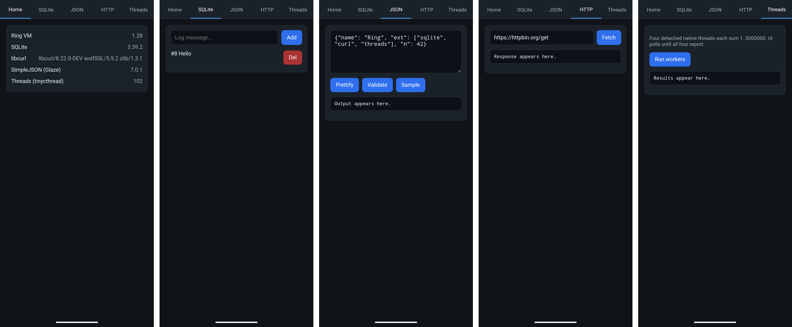
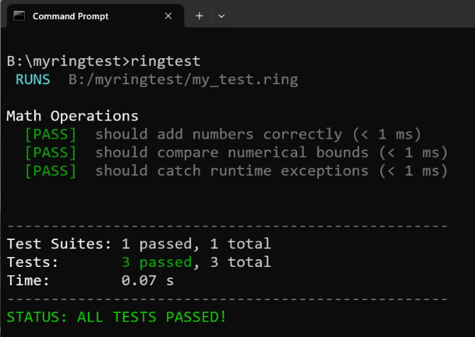
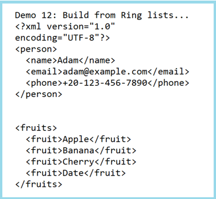
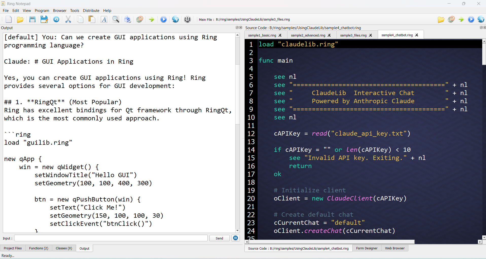
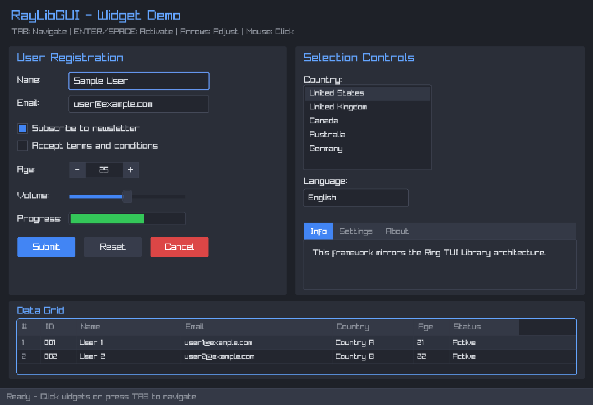
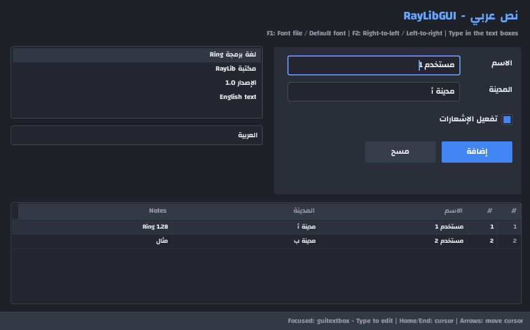
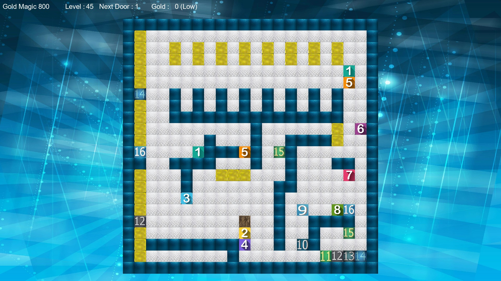

What is new in Ring 1.28
In this chapter we will learn about the changes and new features in Ring 1.28 release.
List of changes and new features
Ring 1.28 comes with the next features!
Ring2APK Package
RingTest Package
XMLLib Package
ClaudeLib Package
RayLibGUI Package
More RingPM Packages
Better GoldMagic800
Better Performance
Better Switch Statement
Better Ring API
Better Libs/Extensions
More Improvements
Ring2APK Package
Build Android APKs from Ring applications.
The package includes examples demonstrating the use of RayLib and WebView.
Install:
ringpm install ring2apk

RingTest Package
RingTest is a modern, ultra-fast, and lightweight unit testing framework and test runner.
Install:
ringpm install ringtest
Example:
describe("Math Operations", func {
it("should add numbers correctly", func {
expect(10 + 20).toBe(30)
})
test("should compare numerical bounds", func {
expect(100).toBeGreaterThanOrEqual(100)
expect(25).toBeLessThan(50)
})
it("should catch runtime exceptions", func {
expect("1 / 0").toThrowError("Zero")
})
})
Output:

XMLLib Package
Pure Ring library for building and parsing XML documents.
Install:
ringpm install xmllib
Example:
load "xmllib.ring"
? "Demo 12: Build from Ring lists..."
oXml = new XMLWriter
oXml.addDeclaration()
# Build person from list
oXml.addFromList("person", [
["name", "Adam"],
["email", "adam@example.com"],
["phone", "+20-123-456-7890"]
])
? oXml.output()
? ""
# Multiple items with same tag
oXml2 = new XMLWriter
oXml2.startElement("fruits")
oXml2.addListAsElements("fruit", ["Apple", "Banana", "Cherry", "Date"])
oXml2.endElement()
? oXml2.output()
Output:

ClaudeLib Package
A library for the Anthropic Claude Messages API.
Install:
ringpm install claudelib

RayLibGUI Package
RayLibGUI is a GUI widgets library written in Ring on top of RayLib.
It provides a dark-themed widget toolkit with keyboard and mouse support.
Note
The library provides support for the Arabic language and right-to-left (RTL) user interface controls.
Install:
ringpm install raylibgui


More RingPM Packages
The following packages have been added to the RingPM registry.
RingUTF8Proc: Unicode text processing for Ring using utf8proc library
RingNAPPGUI: Brings the NAppGUI library (a cross-platform C SDK) to Ring
RingLua: Embeds the Lua 5.5 scripting engine in Ring programs
WinUTF8Path: Process files that uses UTF8 filename/path on Windows
TUILib: TUI Framework for Windows/Linux/macOS based on RingRogueUtil extension
RingRogueUtil: RogueUtil extension for the Ring programming language
SteamLib: Support Steam Achievements (for Windows)
RingEnv: Download and Manage multiple Ring versions
ASCII2Label: Label layout tool (An ASCII drawing and a CSV in, labels out as HTML and SVG)
RingFM: Text measurement (Real font metrics read from a TrueType file)
RingBC: Barcode generator (EAN-13 and CODE128 sets A, B and C, with automatic type selection)
RingQR: QR Code generator (ISO/IEC 18004 Model 2, versions 1 to 40, error correction L, M, Q and H)
SimpleTests: Testing Framework Prototype
SpaceShooter3D: Space combat simulator and dogfight interceptor built using RingRayLib
Mario3D_Sample: Nostalgic 3D Third-Person Platformer built using RingRayLib
ZipStoreLib: Pure Ring library for merging files into ZIP archives without compression
HTMLLib: Pure Ring library for HTML/CSS3 generation with JS, Bootstrap and Three.js support
Better GoldMagic800
The Gold Magic 800 game is updated and added 11 new levels from level 45 to level 55
Install:
ringpm install goldmagic800

Better Performance
Ring 1.28 introduces performance improvements across many core operations.
Test Program |
Ring 1.27 (s) |
Ring 1.28 (s) |
Speedup |
|---|---|---|---|
Loop |
0.08 |
0.02 |
~4.0x |
Variable read |
0.18 |
0.08 |
~2.3x |
Variable write |
0.24 |
0.12 |
~2.0x |
List item read |
0.29 |
0.17 |
~1.7x |
List item write |
0.36 |
0.24 |
~1.5x |
Calling C functions |
0.23 |
0.17 |
~1.4x |
Calling Ring functions |
0.34 |
0.30 |
~1.1x |
Calling Ring methods using the dot operator |
0.73 |
0.52 |
~1.4x |
Calling Ring methods using braces (outside the loop) |
0.69 |
0.52 |
~1.3x |
Object brace open/close |
1.05 |
0.43 |
~2.4x |
Calling Ring methods using braces (inside the loop) |
1.88 |
0.94 |
~2.0x |
Note
The most significant improvements are in loops. Ring loops are now ~4x faster.
Many programs also run faster, especially those that process strings and lists.
Benchmark |
Ring 1.27 (s) |
Ring 1.28 (s) |
Speedup |
|---|---|---|---|
Bubble sort (2000 items) |
0.29 |
0.21 |
~1.4x |
Sieve of Eratosthenes (2M) |
0.50 |
0.36 |
~1.4x |
Matrix multiplication (120x120) |
0.20 |
0.15 |
~1.3x |
Split words by characters (880K characters) |
27.59 |
0.14 |
~197x |
Word count using find() (180K words) |
0.32 |
0.05 |
~6.4x |
Split and capitalize words |
33.29 |
0.41 |
~81x |
20K objects: create, filter and call a method |
3.62 |
0.19 |
~19x |
Build and parse CSV (20K lines) |
4.09 |
0.18 |
~23x |
Hash keys aList[:key] (5000 keys) |
0.06 |
0.01 |
~6.0x |
Recursive quicksort (30000 items) |
4.46 |
0.46 |
~9.7x |
Tip
Tested using Victus Laptop [13th Gen Intel(R) Core(TM) i7-13700H, Windows 11]
Note
The Waving Cubes sample (samples/UsingRayLib/more folder) runs at 360 FPS in Ring 1.28, compared to 260 FPS in Ring 1.27.
Better Switch Statement
A case in the Switch statement can have many expressions separated by commas, like (case 1, 2).
Example:
aDays = ["Sun","Mon","Tue","Wed","Thu","Fri","Sat"]
for nDay = 1 to len(aDays)
switch nDay
case 1, 7
? aDays[nDay] + " : Weekend"
case 2, 3, 4, 5, 6
? aDays[nDay] + " : Workday"
end
next
for cColor in ["red", "green", "black"]
switch cColor
case "red", "green", "blue"
? cColor + " : Primary color"
else
? cColor + " : Other color"
end
next
Output:
Sun : Weekend
Mon : Workday
Tue : Workday
Wed : Workday
Thu : Workday
Fri : Workday
Sat : Weekend
red : Primary color
green : Primary color
black : Other color
Better Ring API
Added: RING_API_REGISTERLENDSTRING(cFunctionName,pFunctionPointer)
RING_API_REGISTERLENDSTRING registers a C function in the Ring VM, just like RING_API_REGISTER, and also tells the VM that the function only reads its string parameters: it doesn’t change them, and it doesn’t keep them after it returns.
When such a function is called with a string variable as a parameter, the Ring VM can lend the string of the variable to the function instead of copying it. This avoids allocating and copying the string, which is faster when the function is called many times or the string is large.
The VM lends the string only when nothing between loading the function and calling it can change the variable (the parameters are numbers, literals or variables). Otherwise, the string is copied as before.
Tip
Use RING_API_REGISTER for functions that change their string parameters or keep them.
Example:
RING_API_REGISTERLENDSTRING("left", ring_vm_generallib_left);
RING_API_REGISTERLENDSTRING("right", ring_vm_generallib_right);
Better Libs/Extensions
StdLib - Revised: encrypt_ex() and decrypt_ex()
GameEngine - gl_libsdl.ring - The bitmaps are now handles into a shared table
RingRayLib - raylib.rh - Added more constants
RingRayLib - Added: LoadFontExDefault(fileName, fontSize) function
RingRayLib - Added: LoadFontExForText(fileName, fontSize, text) function
RingRayLib - Revised: GuiToggle() and GuiToggleGroup()
RingRayLib - Revised: GuiComboBox(), GuiDropdownBox() and GuiListView()
RingQt - QAllEvents - Added setWheelEvent() method
RingQt - libraries/guilib/loadlibfile.ring - Revised LoadLib() usage
More Improvements
language/build/pgo folder - Building Ring using Clang, LTO and PGO
build/installdepubuntu.sh - Removed: libqt5webkit5-dev
tools/ring2exe/libs/qt.ring - Removed: libqt5webkit5-dev
Ring Notepad - Browser Menu - Added links for Packages/News
Removed Folder: ring/samples/UsingAI
Revised: applications/wordgame/WordList.ring
Revised: applications/matching/MatchingList.ring
Added: samples/UsingRayLib/more/ex12_rubik.ring
Added: samples/UsingRayLib/more/ex13_rubik2.ring
Revised: samples/General/HTMLExtract/HTMLExtract.ring - Closed the multiline comment and removed extra lines
Revised: samples/General/RosettaCode/NonDecimalRadices.ring - Error handling
Sort() function - Better Implementation
Insert() function - Better Implementation
SubStr() function - Better Implementation - Handling strings that contains the NULL character
MemCpy() function - Better Implementation - Added more checks for parameters
Read() function - Better Implementation - Added more checks for file size
Call command - Better Implementation - Switching between C and Ring functions
State and Low Level Functions - Convert variable name to lower case
Ring Compiler - LoadSyntax command - Better Implementation (Finding file path)
Ring Compiler - LOADSYNTAX command - Produce an error message if the file contains functions/classes
Ring Compiler - Always use ICO_RETNULL before functions
Ring Compiler - Support using Private keyword inside Eval()
Ring Compiler - Use ICO_FREESTACK before Catch block in Try/Catch
Ring Compiler - Prevent invalid nested calls without an identifier before parentheses
Ring Compiler - Ignore new lines after number/literal when the condition is written between parentheses
Ring Compiler - Support parentheses after numeric literals
Ring VM - Check methods hash table during inheritance
Ring VM - ring_vm_stringtonum() - Better Implementation
Ring VM - ring_vm_api_ispointer() - Better Implementation
Ring VM - ring_vm_movetoprevscope() - Check ring_list_isdontdelete_gc() before list swap
Ring VM - ring_vm_range() - Producing an error when the input data type or value is wrong
Ring VM - ICO_LOADAPUSHV - Use ring_vm_pushv() instead of ring_vm_varpushv()
Ring VM - Remove BraceNewLine() output from the VM Stack
Ring VM - Produce an error message when attempting to assign a list/object to a string character
Ring VM - Prevent adding a key to the list when reading a value using a hash key from a Ring list
Ring VM - Better Performance - Using binary search to check memory blocks
Ring VM - Better Performance - Switch List to Array of Pointers when reading items many times
Ring VM - Better Performance - Pass strings to len()/left()/right()/substr() functions by reference
Ring VM - Better Performance - Using ring_vm_movestringarg() to avoid unnecessary copy of strings
Ring VM - Better Performance - Faster state management when using pSetProperty and pPCBlockFlag
Ring VM - Better Performance - Specific VM instructions for For Loops with a Step Value of one
Ring VM - Better Performance - ring_vm_oop_checkbracemethod() - Cache/Restore the result
Ring Compiler/VM - Item structure - nNumberFlag is renamed to nNumberType
Ring Compiler/VM - Init() method support - Better Implementation
Ring Compiler/VM - New Instruction: ICO_POP
Ring Compiler/VM - New Instruction: ICO_INCPJUMPFORSTEP1
Ring Compiler/VM - New Instruction: ICO_INCLPJUMPFORSTEP1
Ring Compiler/VM - Removed old/unused instruction: ICO_CALLCLASSINIT
Ring Compiler/VM - Better check for string size before creating new strings